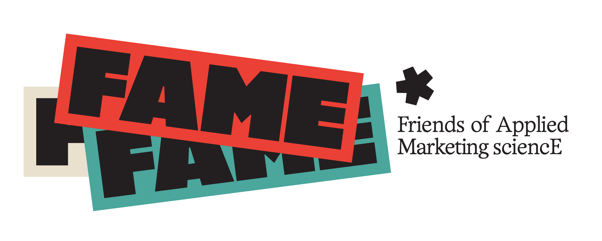

1 / 5Evidence-based marketing nie je dogma ani zoznam večných právd.
Marketing sa nezačína ani nekončí otázkou „Akú kampaň urobíme?“. Je to strategická disciplína naprieč celými 4P.
Nie všetky dáta a tvrdenia majú rovnakú váhu. Metaanalýza, experiment či opakovane replikovaný empirický vzorec sú iným typom dôkazu než komerčný report, prípadová štúdia, expertný rámec alebo skúsenosť jedného človeka.
Vo väčšine trhov rastú značky najmä rozširovaním penetrácie. Lojalita, retencia a vzťahy so zákazníkmi majú svoje miesto, samy osebe však zvyčajne nestačia na výraznejší rast.
Otvorená komunita marketérov, ktorí chcú robiť lepšie rozhodnutia, prinášať rast a vrátiť marketingu meno seriózne profesie.